A storyline puts the printed pieces of one affair in order, as the newspapers printed them. Each piece is a text that several papers printed; every printing was read and checked against its page scan.
It says what was printed, where and when, and how each paper set it: its headings, its lead-ins, the words it changed.
It does not say who copied whom, unless a paper names its source.
The paragraphs between the pieces use only what the papers printed, and each piece shows its opening beside the scan.
Storyline · 1807
‘Not to be intimidated by menace’: the Chesapeake affair
A British warship fires on an American frigate off the Virginia capes. Over six months the papers print the account, the President's answer, a British commodore's threat and a town's reply, the order behind the attack, and the verdicts of November.
11 printed pieces101 printings10 newspapers, Portland to Wheeling26 June – 10 December 1807every printing checked against its scan
● a newspaper's printing ◇ the day the piece was written or signed ▬ the days the court sat. Rows go down in the order the pieces first appeared, so they step to the right by construction; what to read is the spread within each row (how long a piece stayed in print) and the gap between a diamond and its dots (how long a piece took to reach these papers). Point at a dot for the paper and the day.The pieces as a table
On Friday 26 June the National Intelligencer in Washington printed the first account in this archive, under the heading ‘British Outrage’: on the Monday before, the British ship Leopard had followed the American frigate Chesapeake out to sea, demanded three men said to be deserters, and fired on her until she struck. By 7 July, seven more papers had printed the same account, from Alexandria to Portland, and each set it in its own way.
ReportPrinted 26 JuneWashington's National Intelligencer
The Leopard, one of the British squadron at the capes, followed the Chesapeake out to sea, demanded three men said to be deserters, and fired on her until she struck.
BRITISH OUTRAGE. We give the public the particulars of the following outrage on the American flag, under the influence of feelings, which, we are certain, are in unison with those entertained universally by our fellow-citizens; feelings which cannot, which ought not to be suppressed. We know not, indeed, that this savage outrage has a precedent in naval annals.The opening as printed in the National Intelligencer, 26 June. The transcription matches the scan.
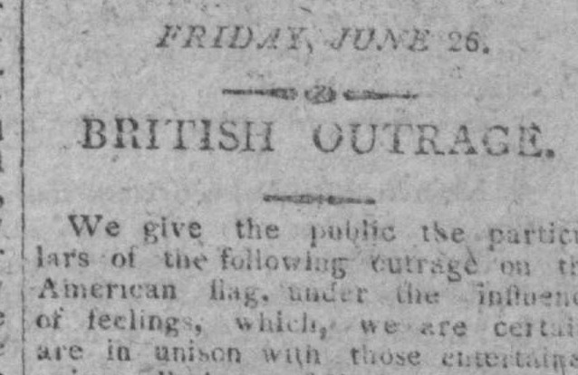
Scan · National Intelligencer, Washington, D.C., 26 June 1807, page 3 · the whole page (PDF)
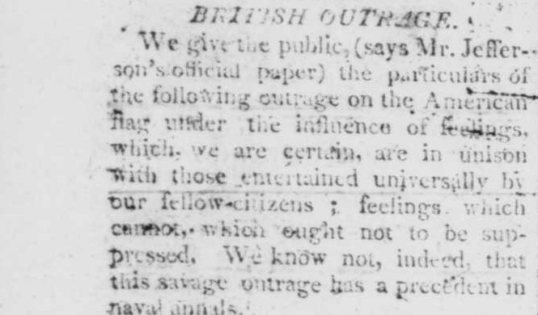
Scan · Portland Gazette, and Maine Advertiser, Portland, Me., 6 July 1807, page 2 · the Portland paper's aside · the whole page (PDF)
How the papers set it
National IntelligencerWashington, 26 June heads it ‘BRITISH OUTRAGE.’ under its dateline, ‘Friday, June 26’: the earliest printing found
Alexandria Daily AdvertiserAlexandria, 27 June ‘BRITISH OUTRAGE!’; its paragraph stops at ‘by our fellow citizens.’, without the sentences ‘feelings which cannot … naval annals’
Herald of the United StatesWarren, 4 July sets a heading of its own above the account: ‘MORE THAN A “SPECK OF WAR.”’
Portland Gazette, and Maine AdvertiserPortland, 6 July ‘We give the public, (says Mr. Jefferson's official paper) the particulars …’
New Hampshire GazettePortsmouth, 7 July prints ‘On Monday, June 22,’ where Washington had ‘On Monday last’
On 2 July the President answered with a proclamation. British armed vessels were to leave American harbours and waters, and all intercourse with them was forbidden. The National Intelligencer printed it in an extra that night; by 23 July it was in nine papers.
ProclamationDated 2 JulyPresident Jefferson
All armed vessels bearing commissions under the British government are to leave the harbours and waters of the United States, and all intercourse with them is forbidden.
By THOMAS JEFFERSON, President of the U. States of America, A PROCLAMATION. DURING the wars which, for some time, have unhappily prevailed among the powers of Europe, the United States of America, firm in their principles of peace, have endeavored by justice, by a regular discharge of all their national and social duties, and byThe opening as printed in the Alexandria Daily Advertiser, 3 July. The transcription matches the scan.
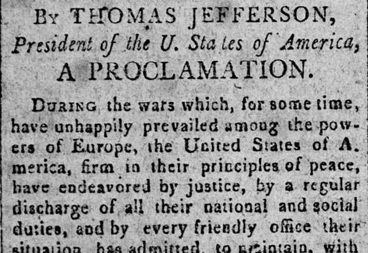
Scan · Alexandria Daily Advertiser, Alexandria, Va., 3 July 1807, page 3 · the whole page (PDF)
How the papers set it
National IntelligencerWashington, 3 July printed it first in an extra the night before, as the paper says, and again in its regular issue
Herald of the United StatesWarren, 11 July prints the dateline ‘Washington-City, July 2, 1807.’ between the heading and the text
EnquirerRichmond, 7 July heads it ‘PRESIDENT OF THE U. STAES OF AMERICA’, a printer's slip
At Norfolk a committee had resolved on 29 June to forbid any communication between the British consul and the British ships lying in Lynhaven Bay. On 3 July the British commodore, Douglas, wrote to the Mayor from his ship: unless the resolution was annulled, he would stop every vessel bound in or out of Norfolk. The Mayor answered the next day, the Fourth of July: ‘The day on which this answer is written, ought of itself to prove to the subjects of your sovereign, that the American people are not to be intimidated by menace.’ The papers printed the exchange together, with the report of the man who carried the answer on board, and the commodore's second letter.
The commodore · on board the Bellona, Hampton Roads
LetterDated 3 JulyCommodore Douglas, on board the Bellona
Unless the committee's resolution against any communication with the British consul and ships is annulled, he will stop every vessel bound in or out of Norfolk; it rests with the inhabitants ‘either to engage in a war or remain on terms of peace’.
His Majesty's Ship Bellona, Hampton Roads, July 3, 1807. SIR, I beg leave to represent to you that having observed in the Newspapers a resolution made by a committee on the 29th ult. prohibiting any communication between His Britannick Majesty's Consul at Norfolk, and his ships lying at anchor in Lynhaven Bay; and this beingThe opening as printed in the Norfolk Gazette, 6 July. The transcription matches the scan.
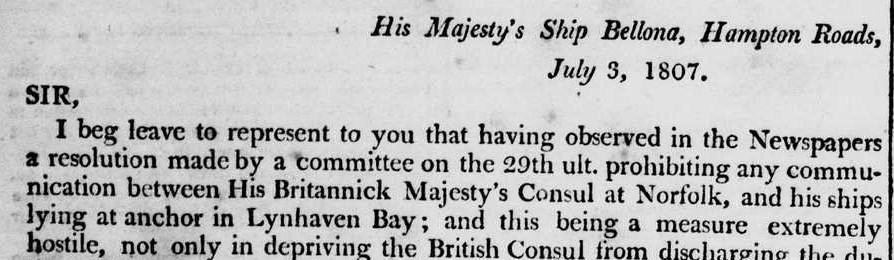
Scan · Norfolk Gazette, Norfolk, Va., 6 July 1807, page 2 · the whole page (PDF)
How the papers set it
National IntelligencerWashington, 10 July prints the letter under the Norfolk Ledger's own heading, ‘WAR INEVITABLE!!!’
Wheeling RepositoryWheeling, 30 July prints ‘his ships in Lynnhaven Bay’, without the words ‘lying at anchor’
AnswerDated 4 JulyRichard E. Lee, Mayor of Norfolk
The ban was an act of individuals, not of the government; the inhabitants will protect themselves against any aggression.
ANSWER. Norfolk, July 4, 1807. SIR, I have received your menacing letter of yesterday. The day on which this answer is written, ought of itself to prove to the subjects of your sovereign, that the American people are not to be intimidated by menace, or induced to adopt any measures, except by a sense of their perfect propriety.The opening as printed in the Norfolk Gazette, 6 July. The transcription matches the scan.
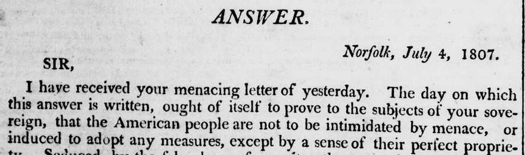
Scan · Norfolk Gazette, Norfolk, Va., 6 July 1807, page 2 · the whole page (PDF)
How the papers set it
EnquirerRichmond, 7 July ‘your menacing letter of yesterday this moment’, as the Alexandria and Martinsburg papers print it; six papers have no ‘this moment’
EnquirerRichmond, 7 July ‘the false shew of sincerity’, where the others have ‘security’
ReportDated 5 JulyLittleton W. Tazewell, who carried the answer
On board the Bellona, Douglas said his letter had been misapprehended, and that he intended no menace.
Norfolk, July 5, 1807. SIR, In pursuance of your request, I this day went down to the British squadron, lying in Hampton Roads, for the purpose of delivering the letter with which I was charged to capt. Douglas; on arriving alongside his ship, the Bellona, I was invited on board, received by capt. Douglas himselfThe opening as printed in the Norfolk Gazette, 8 July. The transcription matches the scan.
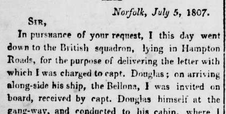
Scan · Norfolk Gazette, Norfolk, Va., 8 July 1807, page 2 · the whole page (PDF)
How the papers set it
Virginia ArgusRichmond, 11 July names its source: ‘—Ledger.’, the Norfolk Gazette and Publick Ledger
Wheeling RepositoryWheeling, 30 July prints a shorter account in the third person, ‘to give an idea of what passed at the interview’
The commodore · on board the Bellona, Hampton Roads
LetterDated 6 JulyCommodore Douglas
Every circumstance has been discussed with the gentlemen who carried the Mayor's answer; he will use every exertion, consistent with the honour of the British flag, toward an amicable end.
His Majesty's ship Bellona, Hampton Roads, 6th July, 1807. Sir, I have the honor to acknowledge the receipt of your letter of the 4th instant, in answer to mine of the preceding day, requesting that the British consul might be restored to his powers. As every circumstance relative to the above communication was so fullyThe opening as printed in the Alexandria Daily Advertiser, 13 July. The transcription matches the scan.
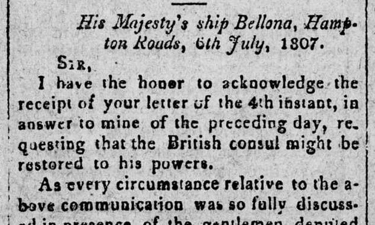
Scan · Alexandria Daily Advertiser, Alexandria, Va., 13 July 1807, page 3 · the whole page (PDF)
How the papers set it
Portland Gazette, and Maine AdvertiserPortland, 20 July sets its own heading: ‘COM. DOUGLAS'S SECOND LETTER.’
Herald of the United StatesWarren, 18 July puts it under ‘By this Morning's Mail.’
The British admiral at Halifax, Berkeley, had signed the order on 1 June: if his captains met the Chesapeake at sea, they were to search her for deserters. The Alexandria Daily Advertiser printed it on 28 July, eight weeks after it was signed and more than a month after the attack.
OrderDated 1 JuneVice-Admiral George Cranfield Berkeley, at Halifax
If his captains meet the Chesapeake at sea, they are to show her captain this order and search her for the deserters named in its margin.
By the honorable George Granfield Berkeley. Vice admiral of the white, and commander in chief of his majesty's ships and vessels employed in the river St. Lawrence along the coast of Nova Scotia, the islands of St. John and cape Breton, the bay of Fundy, and at and about the island of Bermuda, or Somers' Islands.The opening as printed in the Alexandria Daily Advertiser, 28 July. The transcription matches the scan.
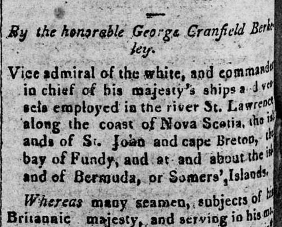
Scan · Alexandria Daily Advertiser, Alexandria, Va., 28 July 1807, page 2 · the whole page (PDF)
How the papers set it
Alexandria Daily AdvertiserAlexandria, 28 July prints the admiral's middle name ‘Granfield’, as far as the scan shows; the others ‘Cranfield’
Herald of the United StatesWarren, 1 August heads it ‘IMPORTANT ORDER;’ and spells the admiral ‘BERKLEY’
Norfolk GazetteNorfolk, 30 September prints it again, in a new setting, after a question whether the court of inquiry would make the order part of its report
On 30 July the President called Congress to meet early, on 26 October, because ‘great and weighty matters’ claimed its consideration. His message to the special session opened: ‘Circumstances, fellow-citizens, which seriously threatened the peace of our country have made it a duty to convene you at an earlier period than usual.’
ProclamationDated 30 JulyPresident Jefferson
‘Great and weighty matters’ require Congress to meet at Washington on Monday 26 October.
A PROCLAMATION. WHEREAS great and weighty matters claiming the consideration of the Congress of the United States form an extraordinary occasion for convening them, I do by these presents appoint Monday the 26th day of October next, for their meeting at the city of Washington; hereby requiring the respective senators and representatives then and thereThe opening as printed in the Alexandria Daily Advertiser, 1 August. The transcription matches the scan.
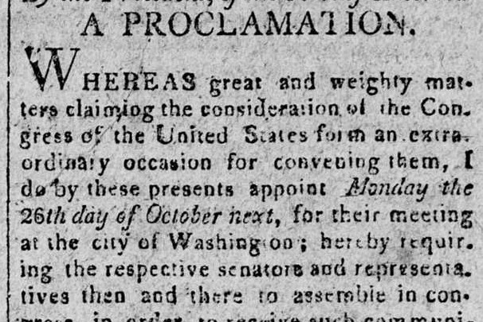
Scan · Alexandria Daily Advertiser, Alexandria, Va., 1 August 1807, page 3 · the whole page (PDF)
How the papers set it
National IntelligencerWashington, 31 July keeps it in its columns seven times, as a standing notice
National IntelligencerWashington, 5 August in one of those, signed by the printer's error ‘JAMES MADSISON’
Herald of the United StatesWarren, 8 August prints ‘from an extraordinary occasion’ (for ‘form’) and leaves out ‘then and there to assemble in Congress’
Message to CongressDated 27 OctoberPresident Jefferson
The message turns to the British answer on the treaty, the attack on the Chesapeake and the proclamation that followed, the defence of the ports, and the Burr trials.
TO THE SENATE AND HOUSE OF REPRESENTATIVES of the UNITED STATES. Circumstances, fellow-citizens, which seriously threatened the peace of our country have made it a duty to convene you at an earlier period than usual. The love of peace so much cherished in the bosom of our citizens, which has so long guided the proceedingsThe opening as printed in the National Intelligencer, 27 October. The transcription matches the scan.
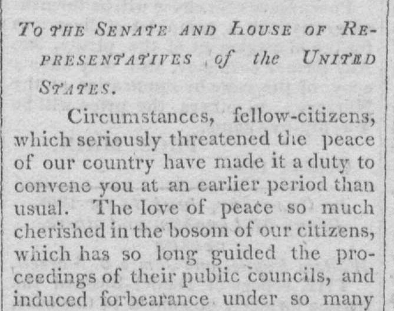
Scan · National Intelligencer, Washington, D.C., 27 October 1807, page 3 · the whole page (PDF)
How the papers set it
EnquirerRichmond, 30 October prints it in an Enquirer Extra of 30 October
New Hampshire GazettePortsmouth, 3 November prints ‘which had so long guided’ and ‘the proceedings of their councils’, without ‘public’, as the Portland Gazette does
In November two verdicts were printed. A naval court of inquiry, held on board the Chesapeake at Norfolk, found among other things that she had been prematurely surrendered. A committee of the House reported that the outrage ‘has been stamped with circumstances of indignity and insult’ with scarcely a parallel.
Opinion of a courtDated 4 NovemberA naval court of inquiry, on board the Chesapeake
On the conduct of Commodore James Barron: among other findings, that the Chesapeake was prematurely surrendered when she was nearly prepared for battle.
At a Court of Enquiry assembled on board the United States Ship Chesapeake, in the harbor of Norfolk and State of Virginia, by order of the Honble. Robert Smith, Secretary of the Navy of the United States, and continued by adjournment from day to day from Monday the 5th day of October, 1807, until Wednesday the 4th day of November, 1807.The opening as printed in the National Intelligencer, 16 November. The transcription matches the scan.
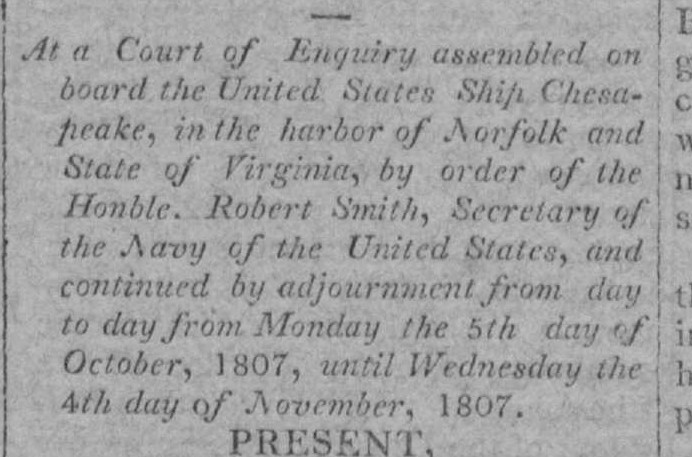
Scan · National Intelligencer, Washington, D.C., 16 November 1807, page 2 · the whole page (PDF)
How the papers set it
Wheeling RepositoryWheeling, 3 December prints ‘Court of Inquiry’, where the others have ‘Enquiry’
New Hampshire GazettePortsmouth, 8 December quotes the court's 25th finding inside an editorial credited to the Democratic Press
Report to the HouseReported 17 NovemberMr. Blount, for a committee of the House
The outrage on the Chesapeake ‘has been stamped with circumstances of indignity and insult’ with scarcely a parallel.
Mr. Blount from the committee to whom was referred so much of the message of the President as relates to aggressions, &c. made a report. The report commences with an expression of sensibility at the outrage committed on the Chesapeake, states the receipt of information relative thereto from the state & navy departments,The opening as printed in the National Intelligencer, 18 November. The transcription matches the scan.
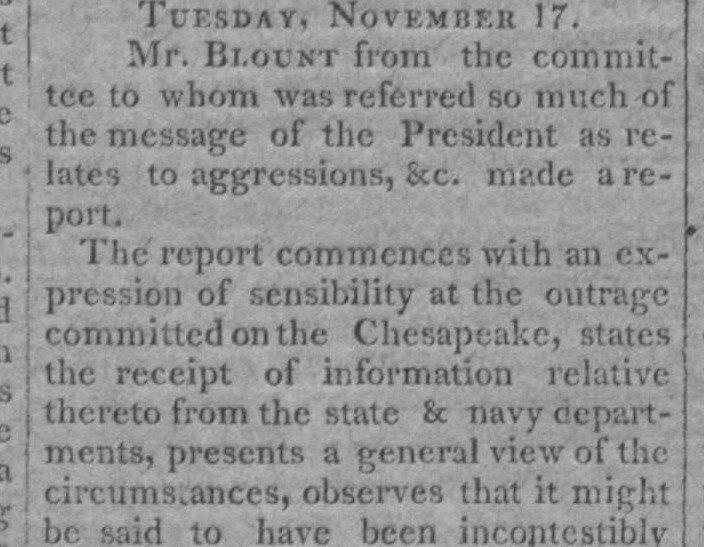
Scan · National Intelligencer, Washington, D.C., 18 November 1807, page 2 · the whole page (PDF)
How the papers set it
National IntelligencerWashington, 18 November prints ‘the state & navy departments’ with an ampersand, where the others have ‘and’
New Hampshire GazettePortsmouth, 1 December puts it under ‘From WASHINGTON, Nov. 17.’
Printed by 8 newspapers, 18 November – 10 December
The act of 22 December 1807 laid an embargo on all ships and vessels in the ports and harbours of the United States; its printings open the reviewed stories of 1808. Across the whole archive, stories that mention an embargo rise in five waves: 1794, 1796, 1798, 1801 and 1808–1810. Two are American embargoes; the three between are European.
More storylines will follow as they are read. Each piece can be followed from paper to paper in Pulses; what the archive shows as a whole is on Findings; how a storyline is checked is in How it works.